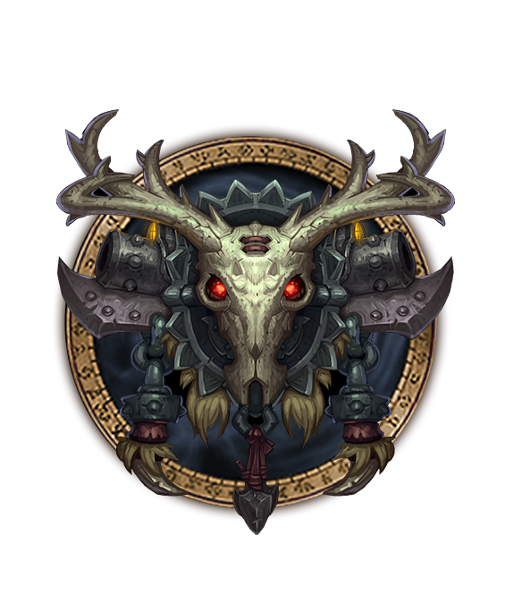
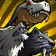
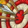

HUNTER



Inescapable Stalkers
From an early age, the call of the wild draws some adventurers from the comfort of their homes into the unforgiving primal world outside. Those who endure become hunters. Masters of their environment, they are able to slip like ghosts through the trees and lay traps in the paths of their enemies.
Specializations

Beastial

Marksmanship
Survival
Class Overview
Hunters battle their foes at a distance, commanding their pets to attack while they nock their arrows and fire their guns. Though their missile weapons are effective at short and long ranges, hunters are also highly mobile. They can evade or restrain their foes to control the arena of battle.